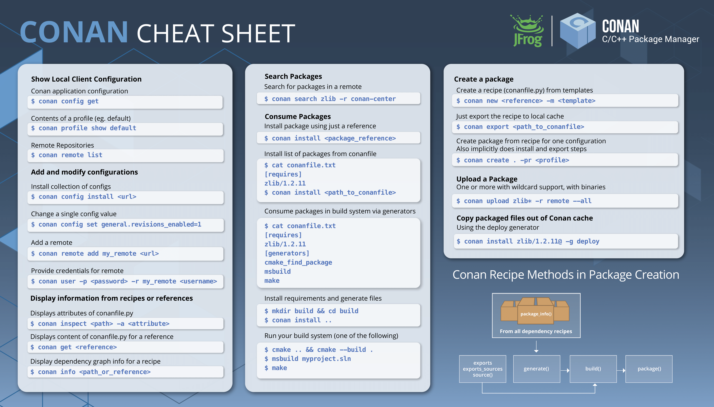

Cheatsheet
Single-Page Graphical Format
JFrog has created the following visual cheatsheet for basic Conan commands and concepts which users can print out and use as a handy reference. It is available as both a PDF and PNG.

{kind=link}
{kind=link}
Community-Created Format
Community contributors have also created the following extended cheatsheet providing a more narrative and workflow-centric cheatsheet. It is effectively, a single-page summary of other docs pages which community users found most relevant to daily Conan operations.
Setup and configuration
Installation
Conan is available as a Python package, and the recommended way to install is via pip:
$ pip install conan
$ pip install conan --upgrade
There are other methods of installation available, including standalone installers, which don’t require a Python installation.
See Install docs.
Configurations
Configurations contain hooks, profiles, remote repositories and settings, making them available for builds once installed. They are installed from a folder, zip, URL or git repo, and the installed items are recorded in ~/.conan/conan.conf.
Install configurations:
$ conan config install <item> # Copy the relevant contents from <item> to the user's ~/.conan directory.
$ conan config install ./my_config.conf
Alternatively, copying files and editing conan.conf can be done manually.
Set up configurations:
$ conan config init # Initialize Conan configuration files. If some are already present, missing files only are
# created
Set configuration values:
$ conan config set <section>.<config>=<value>
$ conan config set log.level=10
$ conan config set log.print_run_commands=False # Make conan less verbose
Inspect configurations:
$ conan config home # See the Conan home directory
$ conan config get [<section>.<config>] # Show some or all configuration items
$ conan config get # Show the full conan.conf file
$ conan config get log.level # Show the "level" item in the "log" section
See conan config reference.
Profiles
Profiles allow users to set aspects of the build configuration. This includes settings, options, environment variables and tool requirements. They can be installed into ~/.conan/profiles. They can also be stored in project directories, which can be useful for specific compilation cases, for example cross-compiling.
Profiles are stored in text files with no file extension. An example profile:
CROSS_GCC=arm-linux-gnueabihf
include(default) # Can include other configurations, for example the default configuration
[settings]
os=Linux
compiler=gcc
compiler.version=6
compiler.libcxx=libstdc++11
build_type=Release
arch=armv7
os_build=Linux
arch_build=x86_64
OpenSSL:compiler.version=4.8 # Dependency-specific value
[options]
shared=True
[env] # Environment variables
CC=$CROSS_GCC-gcc # Strings can be defined and substituted
CXX=$CROSS_GCC-g++
[tool_requires] # Requirements for package builds only
cmake/3.16.3 # Specifying tool requirements here rather than in the recipe makes them less binding
List profiles:
$ conan profile list
Show a profile:
$ conan profile show <profile>
$ conan profile show default
Use profile while executing command (e.g., conan install or conan create):
$ conan <command> . -pr=<profile1> -pr=<profile2> # Use installed profile name, or file path
# Composable, last -pr wins for conflicts
See conan profile reference.
Remote repositories
Conan Center is configured by default.
List configured remotes:
$ conan remote list
Add remote:
$ conan remote add <remote ID> <URL of remote repo>
See conan remote reference.
Consuming packages
Using packages in an application
Write a conanfile.txt. This captures the project configuration:
[requires] # The Conan packages which are used in the application
boost/1.72.0 # Versions override versions upstream in the dependency graph
poco/1.9.4
[tool_requires] # The Conan packages which are used to build the application
7zip/16.00
[generators] # Generators create build system files that capture the dependency information,
cmake # as well as configuration information from Conan settings and options
[options] # Options here override options upstream in the dependency graph
boost:shared=True # Options can be specified on a per-package basis for dependencies
poco:shared=True
[imports] # Copies files from the cache to the current working directory
bin, *.dll -> ./bin # Copies all .dll files from the packages' bin/ folder to the local bin/ folder
Get dependencies and generate build system files via
conan install
$ conan install . [-o <package>:<option>=<value>] # Specify options, e.g. shared=True
[-s <package>:<setting>=<value>] # Specify settings, e.g. build_type=Debug
# <package> is optional: if not specified, the option/setting
# applies to all dependencies
[-r=<remote ID>] # Download dependencies from only the specified remote
[-g=<generator>] # Specify generators at the command line
#include interface files to the Conan packages in the source code
Modify the build system to use the files output from the Generator
Build the application using the build system
Downloading packages
Download a package, if it isn’t already in the local cache:
$ conan install <package>/<version>@[<user>/<channel>#<revision>]
[-r=<remote ID>] # Download dependencies from only the specified remote
$ conan install . # Install a package requirement from a conanfile.txt, saved in your current directory, with all
# options and settings coming from your default profile
$ conan install . -o pkg_name:use_debug_mode=on -s compiler=clang # As above, but override one option and one
# setting
See conan install reference.
The local cache
The local package cache is located at ~/.conan/data by default (but this is configurable).
Clear packages from cache:
$ conan remove "<package>" --force # <package> can include wildcards
$ conan remove 'boost/*' # Remove all versions of Boost
$ conan remove 'mypackage/1.2@user/channel' # Remove all revisions of mypackage/1.2@user/channel
See conan remove reference.
Using packages as standalone applications
Packages can either be copied to the local project folder and run from there, or run directly from the local cache.
In the conanfile.txt, this can be done in the [imports] or [generators] section. See below for the relevant
generators. In the package recipe, this can be done using the imports() or deploy() methods.
Prepare packages for use via the command line:
$ conan install . -g=deploy # Copy dependencies to current folder
$ conan install . -g=virtualrunenv # Create shell scripts to activate and deactivate environments where you can run
# dependencies from the local cache
Searching and introspecting packages
Searching packages
Recipes and binaries can be searched in the local cache or remotes.
List names of packages in local cache:
$ conan search # List names of packages in local cache
Show package recipes or builds of a package:
$ conan search <package>/<revision>@<user>/<channel> # Output depends on how much of a package reference is given.
# Wildcards are supported
[--table=file.html] # Save output in an HTML file
[-r=<remote>] # Look in a remote repository (default is the local cache)
$ conan search mylib/1.0@user/channel # Show all packages of mylib/1.0@user/channel in the local cache
$ conan search "zlib/*" -r=all # Show all versions of zlib in all remotes
Show revisions of a package:
$ conan search <package>/<revision>@<user>/<channel> --revisions
See conan search reference.
Inspecting packages
Print the package recipe in full:
$ conan get <package>/<revision>@<user>/<channel>
$ conan get boost/1.74.0
Print attributes of the package recipe:
$ conan inspect <package>/<revision>@<user>/<channel>
$ conan inspect boost/1.74.0
See conan get and conan inspect reference.
Visualizing dependencies
Show a dependency graph for the package or application:
$ conan info . [--graph=file.html] # Save output in an HTML file
See conan info reference.
Creating packages
Package terminology
Each package recipe relates to a single package. However, a package can be built in different ways.
A reference is used to identify packages:
<package>/<version>@<user>/<channel>#RREV:PACKAGE_ID#PREV
The recipe reference is used to identify a certain version of a recipe:
<package>/<version>@<user>/<channel> # <package> and <version> are defined in the recipe; <user> and <channel> are
# defined by the user when exporting the package
lib/1.0@conan/stable
The package ID is a SHA-1 hash calculated from the build options and settings and from dependencies (according to certain modes).
See Revisions for further details of the recipe revision and package revision (RREV and PREV).
Creating a basic package
Create a template package:
$ conan new <package>/<version>@[<user>/<channel>] # <user>/<channel> is not specified in Conan Center, but otherwise they should be
[-t] # Create a recipe for a basic test to verify the package was created successfully
[-s] # Create a recipe/source template for a package with local source code
Build a package from a recipe and store it in the local cache:
$ conan create . <user>/<channel> [-o <package>:<option>=<value>] # Specify options, for example shared=True.
[-s <package>:<setting>=<value>] # Specify settings, for example build_type=Debug.
# If <package> is not specified, the option and
# setting applies to all dependencies.
[-pr=<profile name>] # If -pr is not specified, the default profile is used
[--build=missing] # Build all dependencies if they can't be downloaded
See conan new and conan create reference.
The package recipe
A package recipe is a Python class, defined in a file called conanfile.py:
class MypackageConan(ConanFile):
... # Various package metadata
settings = "os", "compiler", "build_type", "arch" # Defines available settings
options = {"shared": [True, False]} # Defines available options and defaults. "shared" is a common
# option which specifies whether a library is static or shared
default_options = {"shared": False}
requires = "requiredlib/0.1@user/stable" # Defines package requirements
tool_requires = "tool_a/0.2@user/testing" # Defines requirements that are only used when the package is
# built. These should be build and test tools only
generators = "cmake" # Generator for the package: specifies which build system
# type will be generated
def source(self): # Obtains the source code for the project
self.run("git clone https://github.com/conan-io/hello.git") # self.run() executes any command in the native shell
tools.get("https://github.com/conan-io/hello/" + # tools.get() downloads, unzips, and then removes the .zip file
"archive/refs/heads/master.zip") # The tools module contains a lot of helper methods for common
... # tasks, and using them is often preferable to using self.run()
# See the link below for more information
def build_requirements(self): # Responsible for specifying non-trivial build requirements logic
if self.options.myoption1: # Specify a conditional tool requirement
self.tool_requires("zlib/1.2@user/testing")
def build(self): # Responsible for invoking the build system
cmake = CMake(self) # Helper classes are available for several build systems
...
self.run("bin/unittests") # Run unit tests compiled earlier in the build() method
def package(self): # Responsible for capturing build artifacts
self.copy("*.h", dst="include", src="hello") # self.copy() copies files from the cache to the project folder
...
def package_info(self): # Responsible for defining variables that are
# passed to package consumers, for example
# library or include directories
self.cpp_info.libs = ["hello"] # The cpp_info dictionary contains these variables
...
def requirements(self): # Responsible for specifying non-trivial requirements logic
if self.options.myoption2: # Specify a conditional requirement
self.requires("requiredlib2/0.3@user/stable")
def package_id(self): # Responsible for overriding the way the package
# ID is calculated from the default, for this package only
default_package_id_mode = full_version_mode
if self.settings.compiler.version == "4.9": # Make compiler versions 4.8 and 4.7 compatible
# with version4.9: i.e., they all result in the same package ID
for version in ("4.8", "4.7"):
compatible_pkg = self.info.clone()
compatible_pkg.settings.compiler.version = version
self.compatible_packages.append(compatible_pkg) # The compatible_packages property is used to
# define this behaviour
def imports(self): # Copies dependency files from the local cache
... # to the project directory
def deploy(self): # Installs the project, which can include
... # copying build artifacts
See tools reference.
Python requires
Python requires allow the re-use of python code across multiple recipes. Complex dependency graphs can be produced, and the same concepts apply with python requires as with normal package requirements.
Export a conanfile.py:
$ conan export . <user>/<channel>
Use the exported conanfile.py:
class ConsumerConan(ConanFile):
python_requires = "<package>/<version>@<user>/<channel>" # To use functions and variables from the exported conanfile.py
python_requires_extend = "<package>.<base class name>" # To inherit from a full class in the exported conanfile.py
...
self.python_requires["<package>"].module.func() # To call the method func() from the exported conanfile.py
See conan export reference.
Hooks
Hooks are recipe methods which are defined globally. They should not affect the built binary. There are pre and
post hooks for many methods in the recipe. Hooks reside in ~/.conan/hooks, and are include in ~/.conan/conan.conf
under the [hooks] section.
Install a hook:
$ conan config install # In the directory containing the python script with the hook
Specifying build configuration items
Settings
Settings are configuration items which generally apply to all builds of all packages in the dependency tree. compiler, os, arch, and build_type (Release/Debug) are some of the most common.
Available settings are defined in a global settings file: ~/.conan/settings.yml. The settings for a given package are defined in the package recipe.
Settings can then be set via profiles or via arguments to conan install or conan create.
Options
Options are configuration items which are generally package-specific.
The available options for a package are defined in the package recipe.
Options can then be set via profiles, an application’s Conanfile.txt, or via arguments to conan install or conan create.
Versioning
Versions
Packages are specified whenever a package is created, and whenever a recipe is consumed via a recipe reference.
Specify ranges:
[>min_ver <max_ver] - specify a version range
[*] - specify any version
[~maj.min] - specify any patch in v[maj].[min]
The version taken is otherwise the maximum available.
Revisions
Revisions allow changes to a package without increasing the version number or overwriting the existing version number. They are disabled by default.
There are two types of revisions:
“Recipe Revisions” (RREV) - Revision of the recipe and sources
“Package Revisions” (PREV) - Revision of a binary package
The recipe revision (RREV) is a SHA-1 hash calculated over the conan_manifest.txt, which contains the individual hashes of the conanfile.py and all the files exported with exports and exports_sources. If the scm feature is used, Conan can also formulate the recipe revision directly from the version control system. Conan only holds one recipe revision in the local cache. Many recipe revisions can be stored in remote repositories. This helps differentiate between packages that have been changed and built without changing the version number. Recipe revisions can be specified wherever a recipe is consumed. If a recipe revision is not specified, the latest revision is used.
The package revision (PREV) is a SHA-1 hash calculated over the binary contents of the package directory after the build and package steps are completed. Package revisions provide the most precise identification for a built package. They are very rarely used directly by users in commands or configurations, because it’s fairly impactical to do so. Instead, they are generally managed by the use of “Lockfiles”.
Enable revisions:
$ conan config set general.revisions_enabled=True
Managing dependencies
Specifying dependencies
Main application dependencies are set in the [requires] section of Conanfile.txt.
Package dependencies - normal requirements, tool requirements, conditional requirements - are set in the package recipe.
Package ID calculation modes
Conan performs dependency resolution via the calculation of package IDs. A package ID is calculated for a desired dependency, and then Conan searches for that package ID.
The package ID calculation, and therefore the dependency resolution, is affected by the default_package_id_mode and the default_python_requires_id_mode. They determine what exactly affects the calculation: which parts of version numbers; package revisions; immediate or transitive dependencies. This relates to both normal requirements and Python requires. By default, only the main version number of direct dependencies are taken into account when calculating the package ID.
These modes can be set in the [general] section of configurations, and in the package recipe.
Resolving dependency conflicts
Versions defined in the conanfile.txt take precedence over versions specified by dependencies. This can be used to resolve conflicts by dictating the use of only one version throughout the whole dependency graph.
Lockfiles
Lockfiles allow a snapshot of a dependency graph used for a build to be taken, and the build to be reproduced exactly at a later time.
Create a lockfile:
$ conan lock create <package>/conanfile.py --user=<user> --channel=<channel>
Use lockfile during conan create or conan install:
$ conan <command> --lockfile conan.lock
See conan lock reference.
Uploading packages to a remote repository
Packages are not uploaded to a remote repository automatically. This needs to be done manually.
$ conan upload "<package>" -r <remote ID> # Wildcards can be specified to upload multiple packages
[--all] # Upload all binaries and their recipes (recipes only uploaded by default)
[--confirm] # Auto-confirm
See conan upload reference.
Important points for enterprises
Versioning, revisioning and dependency resolution should be consistent across a company. Configurations should be synchronised across all developers, in particular package id calculation modes.
In a CI/CD system, use lockfiles throughout, so that builds are reproducible.